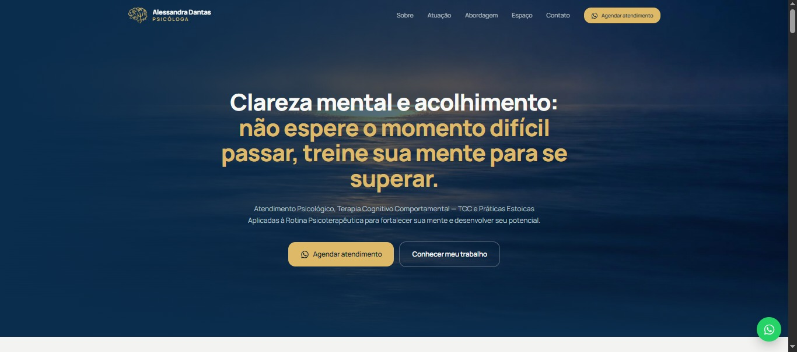

WEB DESIGN · EXPERIÊNCIA DIGITAL
Alessandra Dantas
Uma presença digital elegante, pensada para apresentar serviços e facilitar o agendamento de uma excelente Psicóloga.
Quero um projeto assimNEXUS STUDIO · ESTRATÉGIA & DIGITAL
Criamos experiências digitais, marcas e conteúdos que aproximam negócios das pessoas certas.
TRABALHOS SELECIONADOS
Uma seleção de projetos que transforma objetivos em experiências digitais claras, úteis e memoráveis.

WEB DESIGN · EXPERIÊNCIA DIGITAL
Uma presença digital elegante, pensada para apresentar serviços e facilitar o agendamento de uma excelente Psicóloga.
Quero um projeto assimESTRATÉGIA · SOCIAL MEDIA
Conteúdo com intenção, clareza e uma identidade alinhada a cada profissional.
Conhecer a propostaMENOS RUÍDO.
MAIS
CONEXÃO.
DESIGN · CAMPANHA DIGITAL
Peças digitais que organizam a mensagem e destacam o que realmente importa.
Criar uma campanhaOs projetos exibidos são exemplos de apresentação visual. Substitua-os pelos trabalhos reais antes de publicar o site.
COMO PODEMOS AJUDAR
Soluções que trabalham juntas para dar mais consistência à presença digital da sua marca.
Experiências responsivas, objetivas e construídas para transformar visitas em conversas.
Uma linguagem visual coerente que valoriza sua marca e torna sua mensagem reconhecível.
Planejamento editorial para comunicar com propósito, frequência e direção.
Estrutura e informações essenciais para facilitar que clientes encontrem seu negócio.
DO PRIMEIRO PAPO À ENTREGA
Cada projeto tem suas particularidades. Nosso processo mantém o caminho organizado, colaborativo e alinhado aos objetivos do seu negócio.
Entendemos seu momento, seu público, suas prioridades e o que precisa mudar para sua marca avançar.
Definimos a mensagem, a direção visual e a estrutura mais adequada para o objetivo do projeto.
Transformamos o planejamento em uma solução digital consistente, funcional e responsiva.
Revisamos os detalhes, alinhamos os ajustes combinados e deixamos tudo pronto para entrar em ação.
O QUE GUIA NOSSO TRABALHO
Uma marca não precisa parecer com todas as outras para ser profissional. Precisa ter clareza sobre o que oferece e uma presença que faça sentido para as pessoas que deseja alcançar.
Escolhas de conteúdo, design e estrutura são feitas para resolver um problema — não apenas para preencher espaço.
Visual marcante é importante. Mas clareza, leitura e facilidade de uso precisam vir junto.
Experiências que funcionam bem no celular, facilitam o contato e respeitam o tempo de quem está navegando.
DÚVIDAS FREQUENTES
Tem outra dúvida? Chame a gente e vamos conversar sobre o que você precisa.
Falar com a NexusComeçamos com uma conversa para entender o negócio, as necessidades e o resultado esperado. Com esse contexto, alinhamos o escopo e os próximos passos antes de iniciar a criação.
Sim. A experiência é planejada para se adaptar a diferentes tamanhos de tela, com atenção à leitura, navegação, velocidade e acesso aos canais de contato.
Sim. Você pode conversar com a Nexus sobre uma necessidade específica ou sobre uma combinação de serviços. A proposta depende do objetivo e do escopo de cada projeto.
O prazo de entrega é de 10 dias corridos. O cronograma é alinhado antes do início do trabalho.
É só entrar em contato pelo WhatsApp e contar brevemente sobre seu negócio, o que deseja desenvolver e qual é seu objetivo. A partir daí, podemos entender o melhor caminho.
POR TRÁS DA NEXUS
Acreditamos que uma presença digital forte começa com boas perguntas: o que sua marca precisa comunicar, para quem e com qual objetivo?
Unimos estratégia, design e tecnologia para criar soluções que respeitam a essência de cada negócio — sem fórmulas prontas.
Vamos pensar no seu projetoO PRÓXIMO PROJETO PODE SER SEU
Conte um pouco sobre o seu negócio e o que você quer construir.
Falar com a Nexus